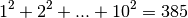
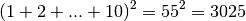

Sum square difference¶
Problem 6
The sum of the squares of the first ten natural numbers is,

The square of the sum of the first ten natural numbers is,

Hence the difference between the sum of the squares of the first ten natural numbers and the square of the sum is 3025 - 385 = 2640.
Find the difference between the sum of the squares of the first one hundred natural numbers and the square of the sum.
Solution
Define the two functions
def sumsq( n ):
"""Sum of squares of 1 <= i <= n.
>>> from euler06 import sumsq
>>> sumsq(10)
385
"""
return sum( i*i for i in range(1,n+1) )
def sqsum( n ):
"""Squared sum of 1 <= i <= n.
>>> from euler06 import sqsum
>>> sqsum(10)
3025
"""
return n*(n+1)*n*(n+1)//4
Test the module components.
def test():
import doctest
doctest.testmod(verbose=0)
Compute the answer.
def answer():
"""
>>> from euler06 import sqsum, sumsq
>>> sqsum(10)-sumsq(10)
2640
"""
return sqsum(100)-sumsq(100)
Confirm the answer.
def confirm(ans):
assert ans == 25164150, "{0!r} Incorrect".format(ans)
Create some output.
if __name__ == "__main__":
test()
ans= answer()
confirm(ans)
print( "The difference between the sum of the squares of the first one hundred"
" natural numbers and the square of the sum:", ans )